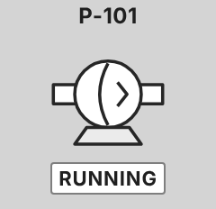

<figure class="card" id="Templates_Rotating_Pump_Diaphragm"><div class="view" style="width:240px;height:232px"><div class="stage" style="width:120px;height:116px;transform:scale(2.0000)"><div class="hit" style="position:absolute;left:22.500%;top:15.520%;width:55.000%;height:56.900%;pointer-events:none" title="click: open dynamic window"></div></div></div><figcaption><code>Templates/Rotating/Pump_Diaphragm</code><br><b class="ok">T_Motor</b> &middot; dock <code>dw_Rotating</code><br>click symbol: open dock &middot; dbl-tap (touch, Manual, canCmd): toggle<br><i>render of the real view</i></figcaption></figure>